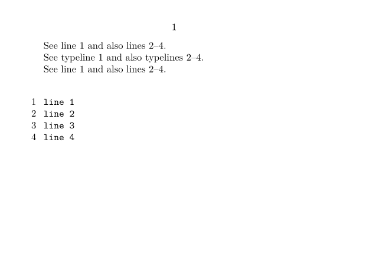

Contents
Summary
The command \someline is used to create a line reference
Settings
Description
The command
\someline[someref]
adds a label to a line inside a typing. This label can then be accessed with
\inline
or
\inlinerange
, or directly with e.g.
\in[lr:b:someref]
.
Examples
Example 1
-
\setuppapersize[A7,landscape] % Ensure that the /BTEX.../ETEX escape is active inside \starttyping \setuptyping[numbering=line,escape=yes] \starttext See \inline[line:single] and also \inline[line:range]. \crlf See \inline{typeline}[line:single] and also \inline{typelines}[line:range].\crlf See line~\inlinerange[line:single] and also lines~\inlinerange[line:range].\crlf \starttyping line 1/BTEX\someline[line:single]/ETEX line 2/BTEX\startline[line:range]/ETEX line 3 line 4/BTEX\stopline[line:range]/ETEX \stoptyping \stoptext
- 